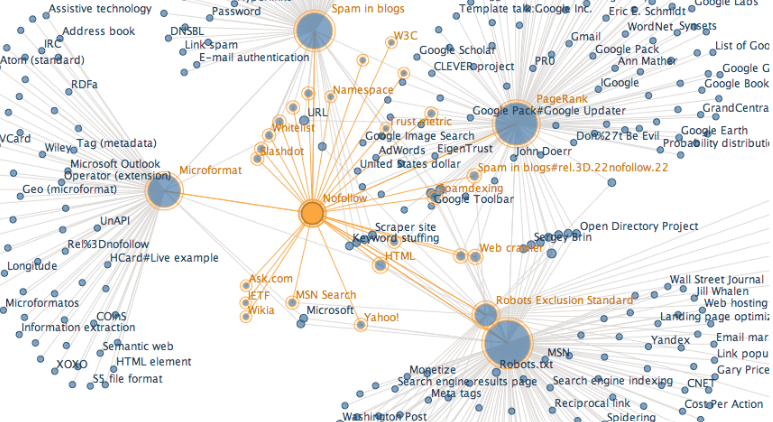
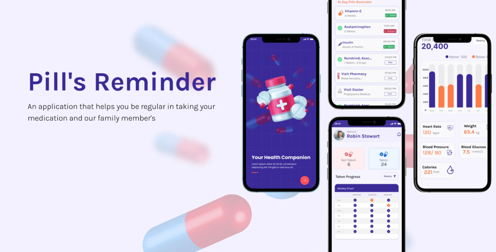

I designed an interactive Power BI dashboard that brings together fragmented U.S. healthcare data-patient admissions, treatment outcomes, billing, and hospital performance into one unified analytics tool.
The project addresses a key problem in healthcare: data stored across multiple systems makes it difficult to monitor trends, compare hospitals, and make timely decisions.
My solution integrates three connected pages (Patient Demographics, Key Trends, Treatment & Cost Analysis) with dynamic filters, KPI cards, DAX-driven insights, LOS buckets, and condition-specific drilldowns. I implemented field parameters, bookmarks, page navigation, and advanced DAX to create a smooth and intuitive user experience.
This dashboard enables healthcare teams to quickly explore trends, understand costs, and make more informed, data-driven decisions.


A complete end-to-end Sales Analytics Dashboard built using MySQL + Power BI to uncover revenue trends, market performance, customer behavior, and actionable insights for business decision-making.
This project simulates a real business scenario where leadership needs clarity on declining sales.
Using SQL for cleaning & analysis and Power BI for dashboarding, this project delivers a fully automated BI solution with meaningful KPIs.
This project focuses on detecting fake news shared across social media platforms using natural language processing (NLP) and machine learning (ML) techniques. It explores linguistic and structural patterns in news content to classify articles as real or fake.
A complete end-to-end machine learning project designed to detect potential student depression levels using data science, machine learning, deep learning, and API deployment.
This project aims to identify early signs of student depression by analyzing a comprehensive set of behavioral, academic, and lifestyle indicators.
We collected and processed data such as sleep patterns, study habits, social activity levels, academic performance, and daily routine metrics. By applying machine learning models-including Random Forest, Logistic Regression, and XGBoost—we were able to uncover patterns that correlate with increased risk of depression. The approach focuses on early detection, helping institutions and counselors intervene proactively before symptoms escalate. This project demonstrates how data-driven insights can support student well-being and promote healthier academic environments.

This project focuses on analyzing large-scale Wikipedia data using PySpark to uncover structural relationships between pages. The primary objective is to identify mutual links - pairs of Wikipedia pages that link to each other, indicating a strong, bidirectional relationship. Building on this, the project computes connected components to find clusters of pages that are interconnected through chains of mutual links. These components reveal natural groupings of related Wikipedia topics, enabling deeper insights into how information is organized and linked across the platform. By leveraging distributed data processing with PySpark, the project efficiently handles the scale of Wikipedia datasets while delivering meaningful graph-based insights.

PillPal is a simplified medication reminder and prescription-tracking app designed for elderly users who struggle with managing daily doses. Our team focused on accessibility, clear navigation, and reducing cognitive load by removing login screens and beginning with language selection and emergency contact setup. Through iterative prototyping and usability testing, we refined key features such as adding medications, setting reminders, and viewing schedules. The final design emphasizes clarity, reliability, and ease of use to help older adults stay consistent with their medications.

Soul Healer is a cross-platform emotional-wellness app built with Flutter and Firebase to help users manage stress, loneliness, and overwhelming emotions in a safe, anonymous space. The app allows individuals to share their feelings without judgment, access calming resources like relaxing music and breathing exercises, track their moods, and receive supportive guidance through an integrated chat companion. Designed with a soothing UI and mindful user flow, Soul Healer promotes emotional stability and self-reflection while offering a future pathway for optional connection with mental-health professionals. It aims to provide immediate comfort and grounding during moments of emotional overwhelm.